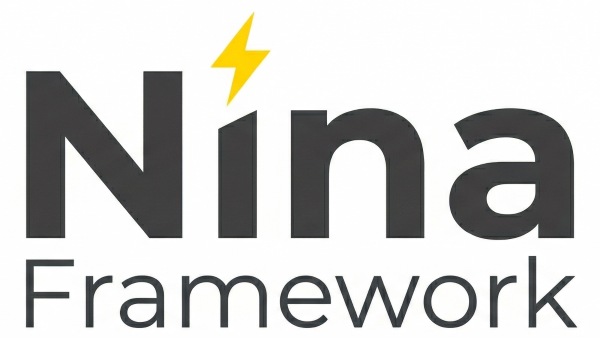

A modern, declarative WASM framework for building fast web applications. No JavaScript bundlers. Just pure Go and the power of Tailwind.
func (a *App) View() *nn.Element {
return ui.Stack().Children(
nn.H1().Text("Hello, WebAssembly!"),
ui.Button("Click me").OnClick(func(e nn.Event) {
ui.Toaster.Success("Nina is awesome!")
}).El(),
).El()
}Write your business logic and UI in a single language. Your backend and frontend finally share the exact same types and structures.
Style components quickly and safely. Enjoy absolute freedom of customization without the need to maintain messy CSS files.
A lightweight core with its own Virtual DOM. Forget about heavy node_modules folders, npm conflicts, and complex Webpack configs.